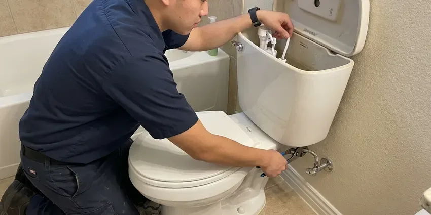
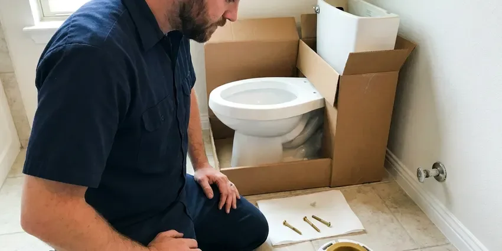

Sink Installation in Atlanta, GA
When you need a new sink installed in Atlanta, GA, trust HGR Plumbing for prompt, high-quality service that meets all local codes.
- Fast, Reliable Service
- Georgia Plumbing Experts
- New Valves and Supply Lines
- All Sink Styles Installed

Ready for a New Sink in Your Home in Atlanta, GA?
Contact us today for a free estimate and experience top-notch plumbing service.
Sink Installation That Fits Your Vanity and Budget in Atlanta, GA
At HGR Plumbing, we understand that a properly installed sink is crucial for both looks and function. We handle all types of installations, from simple drop-ins to complex undermount and wall-mounted units, ensuring every connection is watertight and durable for Atlanta properties.
Our expertise includes:
- Compliance with Georgia plumbing codes
- Precise fitting for all sink types
- Expert drain and faucet connections

Additional Bathroom Plumbing Services in Atlanta, GA
From toilets to showers, our bathroom plumbing team in Atlanta, GA repairs, installs, and replaces every fixture with clean, code-compliant work.


Toilet Repair service for Atlanta homeowners

Professional toilet installation, Atlanta


Customers
Why Choose HGR Plumbing for Sink Installation in Atlanta, GA?
Our team is committed to delivering clean, efficient, and reliable installations, so your new sink performs flawlessly for years to come.
- Transparent Pricing, You will receive a straight, upfront quote with no hidden fees for your sink installation project.
- Remodel Friendly, We coordinate timing with cabinet and countertop installers.
- Code Compliance, We carefully follow all Georgia plumbing codes for safe and compliant installations, including proper drainage and venting.
Citywide Coverage
From older homes needing new drain stubs to new construction punch lists, our plumbers cover all of Atlanta. We schedule installs around your countertop delivery so nothing sits unfinished.
Experienced Team
Each HGR Plumbing plumber is licensed, insured, and focused on providing the best possible service for your sink installation, treating your home with respect and care.
Safety-First Approach
Safety is our top priority for every sink installation. We take all necessary precautions to protect your home and ensure our plumbers work in a secure environment, following all safety protocols.
Trusted Certified Atlanta Plumbing Services Professionals
At HGR Plumbing, we take pride in providing certified plumbing services throughout Atlanta, GA. Backed by leading industry credentials, our experienced plumbers combine technical skill with genuine customer care. Whether it is repair, installation, or maintenance, we follow strict safety and quality standards to deliver lasting results you can trust.
Call Us Now PHCC Plumbing Contractor Recognition
PHCC Plumbing Contractor Recognition Better Business Bureau (BBB) Accreditation
Better Business Bureau (BBB) Accreditation Angi Certified Pro
Angi Certified Pro ISO 9001 Quality Management Certification
ISO 9001 Quality Management CertificationProfessional Sink Installation Services in Atlanta, GA
Sink Replacement & Upgrades in Atlanta
Replacing an old, worn-out sink can noticeably improve the look and function of your space. We handle the careful removal of your existing sink and dispose of it properly. Our team can help you upgrade to a larger, more modern, or more durable sink that fits your existing countertop cutout or advise on modifications needed. This service is a great fit for refreshing your kitchen or bathroom without a full remodel in Atlanta.

Sink Installation Cost Factors in Atlanta, GA
A simple drop-in swap costs much less than a new undermount on stone or a vessel sink that needs a drain relocation. Moving the drain, adding a second sink or replacing old galvanized stubs adds labor. We price the plumbing separately from the countertop so you can compare. You will know the full installed cost before we start.
Faucet & Drain Assembly for New Sinks in Atlanta, GA
A new sink installation often includes new faucets and drain assemblies. We meticulously install all components, from single-handle to widespread faucets, and ensure proper P-trap and drain connections. We work with all major brands like Moen, Delta, Kohler, and Pfister, confirming compatibility and efficient water flow. Our attention to detail prevents common post-installation issues like slow drains or drips.
Vessel Sink Installation in Atlanta, GA
Vessel sinks sit on top of the counter, which changes the drain height and faucet requirements. We install the mounting ring, set the bowl level, and use a vessel-specific drain with or without an overflow as the basin requires. We also confirm your faucet is a tall or wall-mount model that reaches past the rim. The trap arm is adjusted so everything lines up under the counter.
Kitchen Sink Installation in Atlanta
The kitchen sink is a high-traffic area, and a proper installation is key to its lifespan and function. We install all types of kitchen sinks, including undermount, drop-in, farmhouse, and bar sinks. Our team delivers correct alignment with countertops, secure mounting, and watertight connections for both the drain and supply lines. We also connect garbage disposals and dishwashers seamlessly during the installation process, following all Georgia plumbing codes.
Drop-In Sink Installation in Atlanta, GA
Drop-in or self-rimming sinks are the most forgiving style and a good choice for laminate counters. We check the cutout, seal the rim with silicone or plumber's putty as the maker specifies, and connect a new pop-up drain. This is often the fastest and most affordable sink installation. It is also a simple way to refresh an older vanity.
Commercial Restroom Sink Installation in Atlanta
Offices, restaurants and retail spaces need durable lavatories that meet code and stand up to heavy use. We install wall-hung and countertop lavatories, sensor faucets and mixing valves where required. Work is scheduled around your business hours to keep restrooms open. We can also replace multiple sinks in one visit.

Leak-Proof Sink Connections in Atlanta, GA
The most important part of any sink installation is making sure all connections are leak-proof. Our plumbers use high-quality sealants, proper pipe dope, and correct torque on all fittings to prevent drips and leaks. We conduct thorough water pressure tests after every installation to confirm watertight integrity. This attention to detail protects your cabinets and floors and ensures the life of your new sink in Atlanta, GA.
Local Sink Installation Near Me in Atlanta, GA
We aim to be the go-to plumbing experts for new sink installations. Whether you are in a historic home or a new build, our local plumbers are ready to deliver efficient and professional service right to your door.
We also know the local housing stock. Older in-town homes often have galvanized steel supply lines that corrode from the inside, while newer construction mostly uses PEX or CPVC. That helps us predict where drains and stubs sit before we open anything, and fewer surprises means a smoother install day.
HGR Plumbing at a Glance
- Licensed and insured plumbers serving Atlanta, GA
- Same-day appointments and 24/7 emergency response
- Upfront, flat-rate pricing before work begins
- 4.9-star rated by 357+ Georgia customers
Atlanta Map
Atlanta Information
- Population
- 510,823
- Area codes
- 404/678/770
- Service area
- Atlanta and communities within 40 miles
- Nearby
- Brookhaven, Smyrna, Sandy Springs, South Fulton
Municipal water across much of the northern half of Georgia comes from rivers and reservoirs and tends to run fairly soft, which is gentle on fixtures and water heaters. Proper sink installation matters for homes in Atlanta, GA, because tight, well-supported connections hold up longer against the stress that water and time put on plumbing.
Expert Services
Trust our professionals for reliable HGR Plumbing solutions in Atlanta, GA.
Our Specialized Plumbing Services in Atlanta, GA
At HGR Plumbing, we provide a complete range of plumbing services across Atlanta, GA. From leak detection to full system installations, our team ensures fast, precise, and affordable service for both residential and commercial properties. Explore our core services below:


How Our Sink Installation Service Works in Atlanta, GA
Here is how we get your new bathroom sink installed and working.
Request a Quote
Call (770) 470-3778 or fill out our online form to schedule an appointment. We will discuss your sink installation needs and provide a straight, upfront estimate.
On-Site Assessment
Our plumber will visit your Atlanta home to assess the existing setup, take measurements, and confirm the best approach for your new sink installation.
Professional Installation
We carefully remove your old sink, install the new unit, connect all plumbing, and test for leaks. We make sure everything is clean and functional before we leave.
Frequently Asked Questions About Sink Installation in Atlanta
The cost of sink installation in Atlanta, GA generally ranges from $200 to $600, depending on the type of sink, complexity of the installation, and any necessary plumbing modifications. This usually includes labor but not the cost of the sink itself. For a precise estimate, it's best to get a custom quote from HGR Plumbing.
Many vessel sinks have no overflow, so the drain must be a non-overflow type, or air will not flow freely. We match the drain to the bowl to avoid the problem.
Generally, replacing an existing sink with a similar type does not need a permit in Atlanta, GA. However, if the installation involves relocating plumbing lines, adding new lines, or significant structural changes, a permit might be necessary. We will let you know if your project requires one and can assist with the permit application process.
To prepare for your sink installation, please clear out the cabinet beneath the sink and provide easy access to the work area. If you are supplying the new sink, have it readily available for our plumbers. Clearing the space helps our team work efficiently and safely.
HGR Plumbing stands behind our work with a comprehensive labor warranty on all sink installations. This covers any issues directly related to our installation for a specified period. The warranty on the sink fixture itself will be provided by the manufacturer. We will explain all warranty details before starting any work.
A basic drop-in swap is doable for experienced DIYers. Undermount, vessel and wall-hung sinks involve support, sealing and drain height details that are all too easy to get wrong.
Most bathroom sink installs take two to four hours. Undermount sinks may need adhesive cure time before the drain is fully loaded.
We guarantee our installation labor, and the sink and drain carry the manufacturer's warranty. Details are listed on your invoice.
What People Are Saying About Our Plumbing Experts?

Sofia M.
Two new toilets installed in one visit, no mess left behind, and the tech even adjusted a faucet he noticed was dripping. Fair pricing and really friendly.
Toilet Installation · Atlanta, GA
Mark T.
When our office needed drain cleaning, HGR Plumbing provided quick, reliable service. The plumber arrived on time and made sure every drain flowed perfectly before leaving. Very satisfied.
Drain Cleaning · Smyrna, GA
Daniel K.
A pipe burst at 11 pm and they actually answered. The plumber showed up within the hour, shut everything down, and had us back to normal the next morning. Could not ask for more.
Emergency Plumbing · Marietta, GALaura S.
I scheduled a water heater replacement, and the team made the process smooth and affordable. The new unit works perfectly, and they cleaned up after completing the job.
Water Heater Replacement · Sandy Springs, GA
Patricia H.
We had a slab leak that two other companies could not find. HGR Plumbing located it in under an hour, explained our options, and the price matched the quote to the dollar.
Slab Leak Repair · Atlanta, GA
James P.
Our commercial plumbing system had a leak under the sink, and HGR Plumbing handled it professionally. The plumbers arrived quickly and restored everything without disruption to our customers.
Commercial Plumbing · Brookhaven, GA